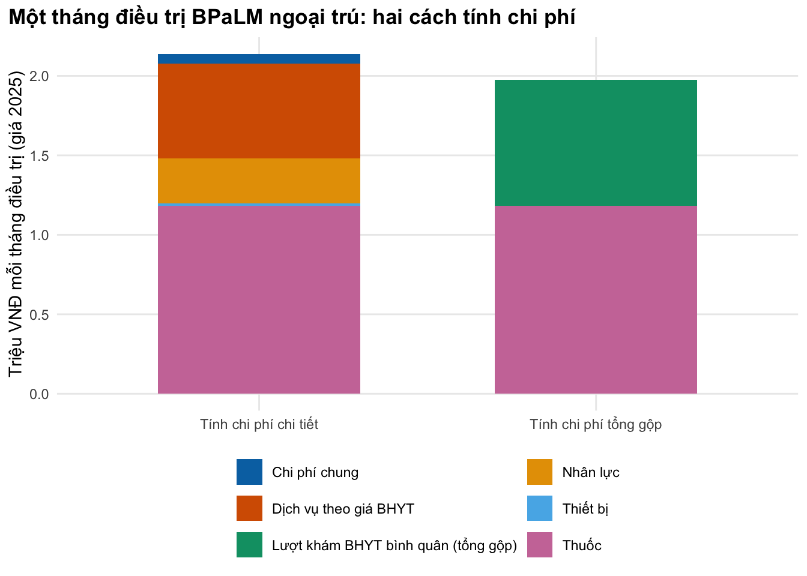

Chọn quan điểm phân tích, tính chi phí chi tiết và tổng gộp, dựng chi phí đơn vị từ giá BHYT, lương và giá thuốc đang áp dụng ở Việt Nam
Vì sao bạn nên quan tâm?
Mỗi sáng ở tổ chống lao huyện, một điều dưỡng nhìn người bệnh lao kháng thuốc uống thuốc BPaLM trước mặt mình. Tiền thuốc cho cả đợt 6 tháng theo giá Global Drug Facility chỉ khoảng 7,091,480 VNĐ, bằng 1.3 tháng lương tối thiểu vùng I; một lần cấy đờm theo giá BHYT là 301,000 VNĐ, bằng 7.5 bát phở. Nhưng phút làm việc của điều dưỡng, máy X-quang, tiền xe và ngày công người bệnh bỏ lại để đến điểm uống thuốc có giám sát (DOT) không nằm trên tờ hóa đơn nào. Bài này giúp bạn quyết định đếm chi phí nào, theo quan điểm của ai, và tính chi tiết đến mức nào.
Mục tiêu học tập
Sau bài này, bạn có thể:
Chọn quan điểm phân tích (perspective) và liệt kê chi phí thuộc phạm vi của quan điểm đó.
Tính chi phí một tháng điều trị bằng tính chi phí chi tiết (micro-costing): lượng nguồn lực × đơn giá, gồm nhân lực, xét nghiệm, thiết bị và chi phí chung.
So sánh với tính chi phí tổng gộp (gross-costing) và nói được con số tổng gộp che mất điều gì.
Đánh giá một nguồn chi phí Việt Nam: đó là giá/hóa đơn (charge) hay chi phí nguồn lực (resource cost), năm tham chiếu chi phí (cost year) nào, đơn vị tiền nào.
Ý chính
Ba bước của mọi ước tính chi phí: định danh nguồn lực, đo lường lượng dùng, định giá từng đơn vị. Quan điểm phân tích quyết định bước đầu tiên.
Ở bệnh lao, chi phí của người bệnh (đi lại, ăn ở, thu nhập mất đi) có thể lớn hơn chi phí của hệ thống y tế. Mô hình theo quan điểm cơ quan chi trả không thấy phần này.
Giá BHYT là nguồn đơn giá sẵn có nhất ở Việt Nam, nhưng nó là giá, không phải chi phí nguồn lực: năm 2025 giá chỉ gồm chi phí trực tiếp và tiền lương; khấu hao máy không nằm trong đó (Bộ Y tế 2024; VOV 2026).
Thiết bị không tính bằng giá mua mà bằng chi phí tương đương hằng năm (equivalent annual cost, EAC), chia cho số lượt sử dụng.
Lấy số liệu từ các tệp dùng chung của khóa học (vn_context(), vn_prices()): một con số, một nguồn, mọi module cùng cập nhật.
Nhiều nghiên cứu chỉ báo cáo trung vị; mô hình cần trung bình số học. Với hóa đơn lệch phải, hai số có thể chênh nhau gấp 2.0 lần.
Nội dung
Quan điểm phân tích quyết định chi phí nào được đếm
Quan điểm phân tích là góc nhìn của bên chịu chi phí. Cùng một tên gọi (người bệnh, cơ quan chi trả, hệ thống y tế, xã hội) được hiểu khác nhau giữa các hướng dẫn (Sittimart và c.s. 2024). Hội đồng chuyên gia Mỹ khuyến nghị báo cáo song song quan điểm ngành y tế và quan điểm xã hội, kèm bảng liệt kê tác động (impact inventory) (Sanders và c.s. 2016); với nước thu nhập thấp và trung bình, khung iDSI là điểm xuất phát (Wilkinson và c.s. 2016).
Ở bệnh truyền nhiễm, chọn quan điểm làm thay đổi bức tranh. Tại Bệnh viện Bệnh Nhiệt đới TP.HCM, tổng chi phí bệnh tật của sốc nhiễm khuẩn gấp 6.7 lần hóa đơn viện phí, của sốc sốt xuất huyết Dengue gấp 6.3 lần (McBride và c.s. 2026); chi phí ngoài y tế đã đáng kể ngay trong thời gian nằm ICU (Hung và c.s. 2025). Với lao, khu vực công giám sát uống thuốc hằng ngày, và chính thu nhập mất đi vì phải đến điểm DOT là một nguồn chi phí lớn của hộ gia đình (Nguyen và c.s. 2024).
Ba bước: định danh, đo lường, định giá
flowchart LR A["Quan điểm phân tích"] --> B["Định danh nguồn lực<br/>(nhân lực, thuốc, xét nghiệm,<br/>thiết bị, chi phí chung)"] B --> C["Đo lường lượng dùng<br/>(phút, lần, đợt)"] C --> D["Định giá từng đơn vị<br/>(lương, giá BHYT, giá GDF, EAC)"] D --> E["Chi phí đơn vị<br/>+ đơn vị tiền + năm tham chiếu chi phí + nguồn"] E --> F["params/*.csv<br/>hoặc _shared/params/*.csv"]
flowchart LR
A["Quan điểm phân tích"] --> B["Định danh nguồn lực<br/>(nhân lực, thuốc, xét nghiệm,<br/>thiết bị, chi phí chung)"]
B --> C["Đo lường lượng dùng<br/>(phút, lần, đợt)"]
C --> D["Định giá từng đơn vị<br/>(lương, giá BHYT, giá GDF, EAC)"]
D --> E["Chi phí đơn vị<br/>+ đơn vị tiền + năm tham chiếu chi phí + nguồn"]
E --> F["params/*.csv<br/>hoặc _shared/params/*.csv"]
Tính chi phí chi tiết (từ dưới lên) liệt kê từng nguồn lực của một dịch vụ, đo lượng dùng rồi nhân với đơn giá; lượng dùng lấy từ hồ sơ bệnh án, sổ sách chương trình, quan sát hoặc phỏng vấn (Frick 2009). Tính chi phí tổng gộp lấy một chi phí bình quân (mỗi lượt khám, mỗi ngày giường) nhân với số đơn vị. Ở ví dụ Xpert MTB/RIF tại Nam Phi, chi phí đơn vị theo cách từ trên xuống (US$33.5) gấp 2.0 lần cách từ dưới lên (US$16.9) (Cunnama và c.s. 2016). Nguyên tắc chung nằm trong tài liệu tham chiếu của Global Health Cost Consortium (Vassall và c.s. 2017).
Đơn giá ở Việt Nam: giá BHYT, lương, giá thuốc
Giá dịch vụ BHYT. Thông tư 22/2023/TT-BYT quy định thống nhất giá dịch vụ khám chữa bệnh BHYT giữa các bệnh viện cùng hạng. Từ cuối 2024, theo Luật Khám bệnh, chữa bệnh và Luật Giá năm 2023, Bộ Y tế bắt đầu ban hành quyết định giá riêng cho từng bệnh viện; ví dụ Quyết định 3220/QĐ-BYT cho Bệnh viện Bạch Mai thay mức giá của Thông tư 22/2023, nhưng chỉ tại bệnh viện này (Bộ Y tế 2024); nơi chưa có quyết định riêng, mức giá chung theo hạng của Thông tư 22/2023 là điểm tra cứu đầu tiên. Quyết định ghi rõ giá gồm chi phí trực tiếp và tiền lương tính theo lương cơ sở 2,340,000 VNĐ. Quyết định 1519/QĐ-BYT năm 2026 thêm yếu tố thứ ba là chi phí quản lý (Bộ Y tế 2026); so hai mức giá khám, phần này khoảng 4.0% giá. Khấu hao máy móc không có trong danh sách yếu tố hình thành giá ở cả hai quyết định, và Bộ Y tế cũng nói khấu hao tài sản, thiết bị y tế vẫn chưa được đưa vào giá (VOV 2026). Các giá dịch vụ dùng trong khóa học là giá của Bạch Mai năm 2025, lưu trong _shared/params/vn_prices.csv; bệnh viện hạng thấp hơn có giá thấp hơn, nên đây là cận trên cho một đơn vị lao tuyến tỉnh.
Nhân lực. Một phút làm việc được định giá bằng tổng chi phí cơ sở trả cho nhân viên trong tháng chia cho số phút làm chuyên môn thật. Lương khu vực công bằng lương cơ sở nhân hệ số: bác sĩ hạng III hưởng hệ số viên chức loại A1 từ 2.34 đến 4.98 (Cổng thông tin điện tử tỉnh Hà Tĩnh 2025; HoaTieu.vn 2024), điều dưỡng hạng IV hưởng loại B từ 1.86 đến 4.06 (HoaTieu.vn 2024). Người trực tiếp điều trị người bệnh lao được phụ cấp ưu đãi nghề 70% (LuatVietnam 2011), và đơn vị đóng thêm 21.5% tiền lương cho BHXH, BHYT, BHTN (LuatVietnam 2026). Lương cơ sở là 2,340,000 VNĐ trong năm 2025 và 2,530,000 VNĐ từ 1/7/2026 (Chính phủ 2026); mô hình năm 2025 dùng mức cũ.
Thuốc. Thuốc lao kháng thuốc được định giá theo giá Global Drug Facility; phác đồ BPaLM 6 tháng khoảng 7,091,480 VNĐ mỗi đợt (ITPC-EECA 2025). Đây chỉ là giá thuốc, chưa gồm vận chuyển và phân phối trong nước.
với \(n\) là số năm sử dụng hữu ích và \(r\) là tỷ lệ chiết khấu. Chia EAC cho số lượt sử dụng mỗi năm ra chi phí vốn của một lượt. Khi \(r = 0\), EAC là khấu hao đường thẳng; khi \(r > 0\), EAC cao hơn vì vốn nằm trong máy cũng có chi phí cơ hội (opportunity cost). Một máy X-quang kỹ thuật số di động được mua với giá khoảng 3.1 tỷ VNĐ ở một gói thầu năm 2024 (Báo Đại biểu Nhân dân 2024); khung khấu hao cho thiết bị y tế là 6–15 năm (MISA AMIS 2023).
Chi phí chung. Điện, nước, quản lý và nhà cửa được phân bổ cho dịch vụ theo một khóa (diện tích, số lượt, thời gian nhân viên). Đừng cộng chi phí chung hai lần: giá BHYT đã gồm chi phí trực tiếp vận hành, còn thuốc mua theo giá đấu thầu không dùng điện nước theo tỷ lệ với giá. Trong ví dụ, chi phí chung chỉ tính trên nhân lực và thiết bị.
Giá không phải là chi phí
Hóa đơn viện phí phản ánh giá mà cơ sở thu, do quy định giá và cơ chế tài chính quyết định, không nhất thiết bằng giá trị nguồn lực đã dùng. Các nghiên cứu chi phí Việt Nam dùng trong bài đều lấy số liệu từ hóa đơn: chi phí nằm viện vì lao kháng thuốc tại Bệnh viện Phổi Trung ương (Ngo và c.s. 2026) và chi phí ICU cho uốn ván, sốt xuất huyết Dengue và nhiễm khuẩn huyết (Hung và c.s. 2022). Nhóm tác giả nghiên cứu thứ hai nói rõ giá trên hóa đơn có thể khác giá trị kinh tế của nguồn lực và họ không có tỷ số chi phí/giá (cost-to-charge ratio) để điều chỉnh. Hãy giữ nhãn “hóa đơn” trong cột note và thử độ nhạy.
Trung vị hay trung bình? Mô hình cần trung bình số học, vì tổng chi phí của quần thể bằng trung bình nhân với số người. Bài về lao kháng thuốc có cả hai: trung vị US$707, trung bình US$1,407 (độ lệch chuẩn US$2,196). Phần Bàn luận của bài gọi giá trị nhỏ nhất (US$80.68) là trung vị, trái với Kết quả và Bảng 2; ta theo Bảng 2. Ca bệnh cũng không giống người dùng BPaLM: 58.0% kháng đơn thuốc, 17.3% RR-TB, 14.8% MDR-TB.
Nguồn chi phí đơn vị dùng được ở Việt Nam
Nguồn
Dùng cho
Lưu ý
Quyết định giá dịch vụ BHYT (Bộ Y tế 2024, 2026), lưu trong vn_prices()
Khám, ngày giường, xét nghiệm, chẩn đoán hình ảnh
Là giá; ghi bệnh viện, hạng và năm áp dụng
Giá thuốc: kết quả đấu thầu, giá Global Drug Facility (ITPC-EECA 2025)
Hồi quy nhiều nước; lựa chọn cuối khi thiếu số liệu trong nước
Thu thập mới (tính chi phí chi tiết)
Can thiệp mới chưa có giá
Tốn công nhất, nhưng là cách duy nhất
Thực hành
Ví dụ xuyên suốt: chi phí một tháng điều trị ngoại trú phác đồ BPaLM cho người bệnh lao kháng thuốc ở một bệnh viện phổi tỉnh, uống thuốc có giám sát (DOT) hằng ngày. Lương, phụ cấp, giá xét nghiệm, giá thuốc, giá máy và tần suất theo dõi đều có nguồn; còn lại là giá trị minh họa vì chưa có số liệu công khai: số phút bác sĩ và điều dưỡng, tỷ lệ thời gian làm chuyên môn, số lượt chụp mỗi năm của máy và tỷ lệ chi phí chung.
Chunk đầu nạp các giá trị dùng chung của khóa học (lương, ngày công, tỷ lệ chiết khấu, giá BHYT, giá thuốc) và bảng tham số riêng của bài. Không gõ lại con số nào đã có trong _shared.
# Vietnamese text in figures needs a UTF-8 locale (Rscript may start in the "C" locale)if (!isTRUE(l10n_info()[["UTF-8"]])) invisible(Sys.setlocale("LC_CTYPE", "en_US.UTF-8"))source("../_shared/R/helpers.R")source("../_shared/R/vn_data.R") # course-wide values: the single source of truthsource("code/model.R")library(ggplot2)ctx <-vn_context() # wages, threshold, discount rate, cost yearpr <-vn_prices() # BHYT service prices, drug prices, everyday anchorspc <-read_params("params/costing.csv")cost_year <- ctx$cost_yeardisc_high <-param_range(ctx, "disc_rate")[["hi"]] # upper sensitivity value of the discount ratemonths <- pc$dur_bpalm
Tính chi phí một phút làm việc của bác sĩ và điều dưỡng: lương cơ sở × hệ số × (1 + phụ cấp + phần đóng bảo hiểm), chia cho số phút làm chuyên môn trong tháng. Kiểm tra: chi phí mỗi phút phải dương và điều dưỡng rẻ hơn bác sĩ.
# Monthly employer cost = base salary (2025) x salary coefficient x (1 + allowance + contributions),# then spread over the minutes actually available for clinical work.staff <-data.frame(role =c("Bác sĩ", "Điều dưỡng"),coef =c(pc$coef_doctor, pc$coef_nurse),minutes_per_patient_month =c(pc$min_doctor, pc$min_nurse))staff$monthly_cost <-staff_monthly_cost(ctx$base_salary_month_2025, staff$coef, pc$allowance_tb, pc$employer_contrib)staff$cost_per_min <-staff_cost_per_minute(staff$monthly_cost, ctx$working_days_month, pc$work_hours, pc$productive_share)staff$cost_per_patient_month <- staff$cost_per_min * staff$minutes_per_patient_monthstaff
role coef minutes_per_patient_month monthly_cost cost_per_min
1 Bác sĩ 3.66 20 16400826 2070.811
2 Điều dưỡng 2.86 150 12815946 1618.175
cost_per_patient_month
1 41416.23
2 242726.25
# Checks: every minute has a positive cost, and a nurse minute is cheaper than a doctor minutestopifnot(all(staff$cost_per_min >0), staff$cost_per_min[2] < staff$cost_per_min[1])# The text says the nurse's share per patient-month is far larger than the doctor's (DOT needs many minutes)stopifnot(staff$cost_per_patient_month[2] >2* staff$cost_per_patient_month[1])# Price versus cost: the BHYT price of one outpatient visit next to 20 minutes of a doctorvisit_compare <-c(bhyt_visit_price = pr$visit_outpatient, doctor_time_cost = staff$cost_per_patient_month[1])visit_compare
Mỗi phút bác sĩ tốn 2,071 VNĐ, điều dưỡng 1,618 VNĐ; vì DOT cần nhiều phút, phần của điều dưỡng (242,726 VNĐ mỗi người bệnh mỗi tháng) lớn hơn hẳn. Thời gian bác sĩ (20 phút) tốn ít hơn giá một lượt khám BHYT (41,416 VNĐ so với 50,600 VNĐ): giá và chi phí gần nhau ở đây, nhưng không có gì bảo đảm điều đó cho mọi dịch vụ.
Quy giá máy X-quang về giá năm 2025, tính EAC với ba tỷ lệ chiết khấu, rồi chia cho số lượt chụp. Kiểm tra: ở 0% EAC bằng giá mua chia số năm, và EAC tăng theo tỷ lệ chiết khấu.
# Equivalent annual cost (EAC) of a digital X-ray machine (purchase price moved to 2025 prices),# then its capital cost per exam, at 0%, the course rate and the upper sensitivity rate.xray_price_cy <-inflate_vnd(pc$xray_price, from_year = pc$xray_price_year, to_year = cost_year)rates <-c(0, ctx$disc_rate, disc_high)eac_tab <-data.frame(rate = rates)eac_tab$annuity_factor <-vapply(rates, annuity_factor, numeric(1), years = pc$xray_life)eac_tab$eac <-vapply(rates, function(r) equivalent_annual_cost(xray_price_cy, pc$xray_life, r),numeric(1))eac_tab$capital_per_exam <- eac_tab$eac / pc$xray_volumeeac_tab
# Check: without discounting, EAC is straight-line depreciation; with it, EAC is higherstopifnot(abs(eac_tab$eac[1] - xray_price_cy / pc$xray_life) <1e-6,all(diff(eac_tab$eac) >0))capital_per_exam <- eac_tab$capital_per_exam[eac_tab$rate == ctx$disc_rate]# The BHYT X-ray price covers direct costs and labour, not the machine: how much would capital add?capital_vs_price <- capital_per_exam / pr$test_chest_xray
Ở tỷ lệ chiết khấu 3%, máy giá 3.20 tỷ VNĐ (giá 2025) dùng 10 năm có EAC 375.4 triệu VNĐ mỗi năm, tức 46,930 VNĐ mỗi lượt chụp. Nếu cần chi phí nguồn lực, phần vốn này phải cộng thêm vào giá BHYT 73,300 VNĐ của một lần chụp, tức thêm 64%. Bài 5 bàn về lựa chọn tỷ lệ chiết khấu 3% hay 5% (Haacker, Hallett, và Atun 2020).
Ghép mọi hạng mục thành bảng tính chi phí chi tiết: thuốc theo giá GDF, nhân lực theo lương, xét nghiệm theo giá BHYT với tần suất theo dõi của hướng dẫn điều trị lao kháng thuốc (Médecins Sans Frontières 2023), khấu hao máy, rồi chi phí chung. Kiểm tra: tỷ trọng cộng bằng 1, không có chi phí âm, và chi phí chung đúng bằng tỷ lệ nhân với cơ sở phân bổ.
# Micro-costing of one month of outpatient BPaLM treatment (quantities x unit costs).# Monitoring counts are per 6-month course, so divide by the course length.items <-cost_items(item =c("Thuốc BPaLM (giá GDF)", "Bác sĩ khám", "Điều dưỡng giám sát uống thuốc (DOT)","Soi đờm AFB", "Nuôi cấy đờm môi trường lỏng", "Điện tim", "Công thức máu","Chức năng gan-thận", "X-quang ngực", "X-quang: khấu hao máy (EAC)"),category =c("Thuốc", "Nhân lực", "Nhân lực", rep("Dịch vụ theo giá BHYT", 6),"Thiết bị"),quantity =c(1/ months, pc$min_doctor, pc$min_nurse,c(pc$q_smear_course, pc$q_culture_course, pc$q_ecg_course, pc$q_cbc_course, pc$q_lft_course, pc$q_xray_course, pc$q_xray_course) / months),unit_cost =c(pr$tb_regimen_bpalm_6m, staff$cost_per_min, pr$test_afb_smear, pr$test_mtb_culture_liquid, pc$c_ecg, pr$test_cbc, pr$test_liver_renal_panel, pr$test_chest_xray, capital_per_exam))# Overhead goes on staff and equipment only: drugs are bought at a procurement price, and BHYT# prices already include direct running costs (and, from 2026, a management cost)micro <-add_overhead(items, pc$overhead_share,exclude_categories =c("Thuốc", "Dịch vụ theo giá BHYT"))micro_total <-sum(micro$cost)oh_base <-sum(items$cost[items$category %in%c("Nhân lực", "Thiết bị")])cat_tab <-aggregate(cost ~ category, data = micro, FUN = sum)cat_tab$share <- cat_tab$cost / micro_totalcat_tab[order(-cat_tab$cost), ]
category cost share
5 Thuốc 1181913.33 0.553056666
2 Dịch vụ theo giá BHYT 595400.00 0.278607517
3 Nhân lực 284142.48 0.132959741
1 Chi phí chung 59957.19 0.028055970
4 Thiết bị 15643.48 0.007320107
Một tháng điều trị tốn 2.14 triệu VNĐ, khoảng 0.40 tháng lương tối thiểu vùng I. Nhóm lớn nhất là “Thuốc”: thuốc chiếm 55.3%, dịch vụ theo giá BHYT 27.9%, nhân lực 13.3%, còn khấu hao máy và chi phí chung cộng lại 3.5%. Dồn công sức thu thập số liệu vào các nhóm lớn: giá thuốc và tần suất xét nghiệm quan trọng hơn số phút khám.
Tính lại theo kiểu tổng gộp: chi phí BHYT bình quân mỗi lượt khám chữa bệnh năm 2024 (TTXVN 2025), quy về giá 2025, nhân với số lượt mỗi tháng, cộng thuốc BPaLM.
# Gross-costing: the national average BHYT spending per visit (2024, all diseases, inpatient and# outpatient, drugs included), moved to 2025 prices, x visits per month, plus the BPaLM drug.gross_visit_2024 <- pc$bhyt_spend_2024 / pc$bhyt_visits_2024gross_visit <-inflate_vnd(gross_visit_2024, from_year =2024, to_year = cost_year)gross_non_drug <- gross_visit * pc$gross_visits_monthdrug_month <- pr$tb_regimen_bpalm_6m / monthsgross_total <- gross_non_drug + drug_monthcompare_tab <-data.frame(method =c("Tính chi phí chi tiết", "Tính chi phí tổng gộp"),drug = drug_month,non_drug =c(micro_total - drug_month, gross_non_drug),total =c(micro_total, gross_total))compare_tab
method drug non_drug total
1 Tính chi phí chi tiết 1181913 955143.2 2137056
2 Tính chi phí tổng gộp 1181913 793328.6 1975242
Năm 2024, quỹ BHYT được đề nghị thanh toán bình quân 767,911 VNĐ cho một lượt khám chữa bệnh. Cách tổng gộp cho 92.4% kết quả của cách chi tiết; riêng phần không phải thuốc là 83.1%. Hai tổng gần nhau, nhưng gần nhau một cách tình cờ: con số bình quân gộp cả lượt nội trú lẫn ngoại trú, mọi bệnh, kèm thuốc của bệnh khác, và không chứa phút DOT của điều dưỡng hay khấu hao máy. Nó cũng không đổi khi phác đồ đổi, còn bảng chi tiết thì đổi theo từng xét nghiệm và từng phút giám sát.
Vẽ hai cách tính cạnh nhau, tô màu theo nhóm chi phí, và lưu hình vào figs/. Kiểm tra bằng mắt: phần thuốc phải bằng nhau ở hai cột.
fig_dat <-rbind(data.frame(category = cat_tab$category, cost = cat_tab$cost, method ="Tính chi phí chi tiết"),data.frame(category =c("Thuốc", "Lượt khám BHYT bình quân (tổng gộp)"),cost =c(drug_month, gross_non_drug), method ="Tính chi phí tổng gộp"))fig_cost <-ggplot(fig_dat, aes(method, cost /1e6, fill = category)) +geom_col(width =0.6) +scale_fill_manual(values = pal_course, name =NULL) +labs(x =NULL, y =paste0("Triệu VNĐ mỗi tháng điều trị (giá ", cost_year, ")"),title ="Một tháng điều trị BPaLM ngoại trú: hai cách tính chi phí") +guides(fill =guide_legend(nrow =3)) +theme_course()save_fig(fig_cost, "l01-cost-breakdown.png")

Figure 47.1: Chi phí một tháng điều trị BPaLM ngoại trú theo hai cách tính (VNĐ giá năm tham chiếu chi phí).
So sánh ba quan điểm cho cả đợt 6 tháng. Chi phí của người bệnh lấy từ khảo sát chi phí người bệnh lao ở Hà Nội, Hải Phòng và TP.HCM: trung bình chi phí trực tiếp ngoài y tế (direct non-medical cost) và thu nhập mất đi, tức chi phí gián tiếp (indirect cost), của nhóm điều trị tại chương trình chống lao quốc gia (Nguyen và c.s. 2024), đổi bằng tỷ giá của nghiên cứu và quy về giá 2025 (Bài 2 giải thích bước này). Khoản chi trả từ tiền túi (out-of-pocket, OOP) cho dịch vụ y tế không được cộng thêm, vì chi phí hệ thống y tế đã đếm các dịch vụ đó. Kiểm tra: chi phí xã hội bằng tổng ba thành phần.
# The same course seen from three perspectives (per patient, whole 6-month course).# Patient costs: arithmetic means from a Vietnamese patient cost survey (drug-susceptible TB,# NTP cohort), converted at the study's rate and moved to 2025 prices (Lesson 2 explains the step).# The patient's own medical payments are NOT added: the health-system cost already counts them.to_vnd_cy <-function(usd) inflate_vnd(usd * pc$pt_fx, from_year = pc$pt_price_year, to_year = cost_year)patient_nonmed <-to_vnd_cy(pc$pt_nonmed_mean_usd)patient_income <-to_vnd_cy(pc$pt_indirect_mean_usd)persp <-data.frame(perspective =c("Hệ thống y tế", "Người bệnh: chi phí trực tiếp ngoài y tế", "Người bệnh: thu nhập mất đi (chi phí gián tiếp)", "Xã hội"),cost =c(micro_total * months, patient_nonmed, patient_income, micro_total * months + patient_nonmed + patient_income))persp
perspective cost
1 Hệ thống y tế 12822339
2 Người bệnh: chi phí trực tiếp ngoài y tế 10288596
3 Người bệnh: thu nhập mất đi (chi phí gián tiếp) 27179924
4 Xã hội 50290859
Theo quan điểm xã hội, đợt điều trị tốn 50.3 triệu VNĐ, gấp 3.9 lần quan điểm hệ thống y tế; riêng thu nhập mất đi (27.2 triệu VNĐ) bằng 5.1 tháng lương tối thiểu vùng I (Chính phủ 2025). Trong khảo sát này, 55% hộ chịu chi phí thảm họa do lao (catastrophic total costs). Hai lưu ý: khảo sát đo ở người bệnh lao nhạy cảm thuốc, nên với lao kháng thuốc đây là ước tính thận trọng; và đó là trung bình của 60 người, nên khoảng bất định rộng.
Cuối cùng, đặt các số liệu chi phí nằm viện đã công bố vào một bảng, mỗi dòng có thống kê, đơn vị tiền, năm tham chiếu chi phí và tỷ giá của nghiên cứu.
# Published Vietnamese costs come from hospital bills (charges), in USD of different years.# Medians describe a typical patient; a model needs the arithmetic mean (see the warning box).bench <-data.frame(source =c("Lao kháng thuốc, một đợt nằm viện", "Lao kháng thuốc, một đợt nằm viện","Nhiễm khuẩn huyết ICU, có thở máy", "Nhiễm khuẩn huyết ICU, không thở máy"),statistic =c("trung vị", "trung bình", "trung vị", "trung vị"),n =c(pc$ngo_n, pc$ngo_n, pc$hung_mv_n, pc$hung_nomv_n),usd =c(pc$ngo_median_usd, pc$ngo_mean_usd, pc$hung_sepsis_mv_usd, pc$hung_sepsis_nomv_usd),price_year =c(pc$ngo_price_year, pc$ngo_price_year, pc$hung_price_year, pc$hung_price_year),fx_study =c(pc$ngo_fx, pc$ngo_fx, pc$hung_fx, pc$hung_fx))bench$vnd_study_year <- bench$usd * bench$fx_studybench
source statistic n usd price_year
1 Lao kháng thuốc, một đợt nằm viện trung vị 629 707.24 2024
2 Lao kháng thuốc, một đợt nằm viện trung bình 629 1406.80 2024
3 Nhiễm khuẩn huyết ICU, có thở máy trung vị 36 2860.00 2019
4 Nhiễm khuẩn huyết ICU, không thở máy trung vị 6 675.00 2019
fx_study vnd_study_year
1 25000 17681000
2 25000 35170000
3 23050 65923000
4 23050 15558750
# Right-skewed bills: the mean is far above the medianmean_over_median <- pc$ngo_mean_usd / pc$ngo_median_usdmean_over_median
Bốn dòng này chưa so sánh được với nhau: hai năm tham chiếu chi phí khác nhau, đều là hóa đơn, đều quy đổi bằng tỷ giá do nhóm nghiên cứu chọn, và hai dòng đầu là trung vị với trung bình của cùng một mẫu (trung bình gấp 2.0 lần). Dòng cuối chỉ dựa trên 6 người nên không dùng làm mốc. Bài 2 đưa các dòng còn lại về VNĐ năm 2025.
Mẹo thực hành
Dựng bảng chi phí ở dạng dài: mỗi dòng một nguồn lực, có cột lượng, đơn giá, đơn vị, năm tham chiếu chi phí, nguồn. Phân tích độ nhạy chỉ là đổi một ô.
Lấy giá dịch vụ, lương và tỷ giá từ _shared; nếu thấy một giá đã cũ, sửa ở đó một lần, mọi module cập nhật theo.
Hỏi người làm thực tế (điều dưỡng DOT, kỹ thuật viên X-quang) về số phút và số lượt: sổ sách thường thiếu phần giám sát và tư vấn.
Lưu số liệu hóa đơn và số liệu nguồn lực ở hai tham số riêng để đổi qua lại khi thử độ nhạy.
Lỗi thường gặp
Cộng giá mua thiết bị vào chi phí một lượt. Phải quy về EAC rồi chia cho số lượt; nếu không, lượt đầu tiên gánh cả cái máy.
Coi giá BHYT là chi phí nguồn lực. Giá năm 2025 không gồm khấu hao máy và chi phí quản lý (VOV 2026); ghi rõ bạn dùng giá hay chi phí.
Trộn quan điểm hoặc đếm hai lần. Cộng khoản người bệnh tự trả cho xét nghiệm vào chi phí hệ thống y tế đã gồm chính xét nghiệm đó là đếm hai lần. Viết danh sách chi phí trong phạm vi trước khi tính.
Dùng con số thiếu nhãn. “707 USD” cần ba nhãn: trung vị hay trung bình, năm tham chiếu chi phí, tỷ giá đã dùng. Dùng trung vị thay trung bình chỉ giữ lại 50% chi phí ở ví dụ lao kháng thuốc.
Bài tập
(Dễ) Nếu tỷ lệ thời gian làm chuyên môn giảm từ 0.75 xuống 0.6, chi phí một phút của bác sĩ thay đổi thế nào?
Chi phí mỗi phút tỷ lệ nghịch với tỷ lệ thời gian chuyên môn: cùng tiền lương, ít phút hơn.
(Vừa) Tính chi phí vốn mỗi lượt chụp nếu máy X-quang dùng được 6 năm hoặc 15 năm, hai đầu của khung khấu hao (chiết khấu 3%).
Lời giải
# Exercise 2: capital cost per exam when the machine lasts 6 or 15 years (the depreciation frame)life_range <-param_range(pc, "xray_life")[c("lo", "hi")]ex2_cap <-vapply(life_range, function(n) equivalent_annual_cost(xray_price_cy, n, ctx$disc_rate) / pc$xray_volume,numeric(1))ex2_cap
lo hi
73899.22 33533.96
# Compare the two sources of uncertainty: machine life (6-15 years) and exams per year (4,000-12,000)vol_range <-param_range(pc, "xray_volume")[c("lo", "hi")]ex2_vol_ratio <- vol_range[["hi"]] / vol_range[["lo"]]ex2_share_month <-max(ex2_cap) * pc$q_xray_course / months / micro_totalc(life_ratio = ex2_cap[["lo"]] / ex2_cap[["hi"]], volume_ratio = ex2_vol_ratio, share_of_month = ex2_share_month)
# The text: a short life raises the cost per exam, the capital share stays small, and the volume range matters morestopifnot(ex2_cap[["lo"]] > ex2_cap[["hi"]], ex2_share_month <0.05, ex2_vol_ratio > ex2_cap[["lo"]] / ex2_cap[["hi"]])
Máy dùng 6 năm thì chi phí vốn mỗi lượt là 73,899 VNĐ, dùng 15 năm thì 33,534 VNĐ: chênh 2.2 lần, nhưng cả hai không quá 1.2% chi phí một tháng điều trị (mỗi tháng chỉ có 0.33 lượt chụp), nên không đáng tốn công thu thập thêm. Khoảng dao động của số lượt chụp mỗi năm (mẫu số, 4,000–12,000 lượt) làm chi phí mỗi lượt đổi gấp 3.0 lần, hơn khoảng dao động của tuổi thọ máy; nếu phải chọn, hãy hỏi khoa chẩn đoán hình ảnh về số lượt chụp.
(Khó) Tính lại chi phí của người bệnh bằng trung vị thay cho trung bình. Kết quả còn bao nhiêu phần trăm, và vì sao mô hình phải dùng trung bình?
Lời giải
# Exercise 3: patient costs with medians instead of meansex3 <-c(mean =to_vnd_cy(pc$pt_nonmed_mean_usd + pc$pt_indirect_mean_usd),median =to_vnd_cy(pc$pt_nonmed_median_usd + pc$pt_indirect_median_usd))ex3
Dùng trung vị chỉ giữ lại 65% chi phí của người bệnh. Thu nhập mất đi lệch phải rất mạnh (trung vị US$578, trung bình US$1,025): một số ít người mất việc kéo trung bình lên. Tổng chi phí của cả nhóm người bệnh bằng trung bình nhân số người, nên dùng trung vị làm can thiệp giảm số lần đến điểm DOT (như giám sát qua video) trông kém giá trị hơn thực tế.
Bertram, Melanie Y., Jeremy A. Lauer, Karin Stenberg, và Tessa Tan Torres Edejer. 2021. “Methods for the economic evaluation of health care interventions for priority setting in the health system: an update from WHO CHOICE”. International Journal of Health Policy and Management 10 (11): 673–77. https://doi.org/10.34172/ijhpm.2020.244.
Cunnama, Lucy, Edina Sinanovic, Lebogang Ramma, Nicola Foster, Leigh Berrie, Wendy Stevens, Sebaka Molapo, và c.s. 2016. “Using top-down and bottom-up costing approaches in LMICs: the case for using both to assess the incremental costs of new technologies at scale”. Health Economics 25 (Suppl 1): 53–66. https://doi.org/10.1002/hec.3295.
Haacker, Markus, Timothy B. Hallett, và Rifat Atun. 2020. “On discount rates for economic evaluations in global health”. Health Policy and Planning 35 (1): 107–14. https://doi.org/10.1093/heapol/czz127.
Hung, Trinh Manh, Thanh Nguyen Nguyen, Mau Toan Le, Phuc Hau Nguyen, Thanh Phong Nguyen, Thi Hue Tai Luong, Buu Chau Le, và c.s. 2025. “Non-medical costs incurred by critically ill patients with dengue, sepsis and tetanus within a major referral hospital in Southern Vietnam: a cost of illness study”. BMJ Public Health 3 (2): e002169. https://doi.org/10.1136/bmjph-2024-002169.
Hung, Trinh Manh, Nguyen Van Hao, Lam Minh Yen, Angela McBride, Vu Quoc Dat, H. Rogier van Doorn, Huynh Thi Loan, và c.s. 2022. “Direct medical costs of tetanus, dengue, and sepsis patients in an intensive care unit in Vietnam”. Frontiers in Public Health 10: 893200. https://doi.org/10.3389/fpubh.2022.893200.
McBride, Angela, Nguyen Van Hao, Phan Vinh Tho, Luong Thi Hue Tai, Nguyen Thanh Phong, Nguyen Thanh Ngoc, Nguyen Anh Huyen, và c.s. 2026. “The cost of dengue shock and septic shock in Vietnam: a patient-centred economic analysis”. International Health 18 (3): 431–39. https://doi.org/10.1093/inthealth/ihaf105.
Ngo, Do Minh, An Thi Binh Nguyen, Hanh Duc Nguyen, và Hau Van Hoang. 2026. “Direct medical costs for drug-resistant tuberculosis inpatients at the national lung hospital, Vietnam: a one-year study”. Journal of Public Health Research 15 (3): 22799036261467454. https://doi.org/10.1177/22799036261467454.
Nguyen, Hoa Binh, Luan Nguyen Quang Vo, Rachel Jeanette Forse, Anja Maria Christine Wiemers, Huy Ba Huynh, Thuy Thi Thu Dong, Yen Thi Hoang Phan, và c.s. 2024. “Is convenience really king? Comparative evaluation of catastrophic costs due to tuberculosis in the public and private healthcare sectors of Viet Nam: a longitudinal patient cost study”. Infectious Diseases of Poverty 13 (1): 27. https://doi.org/10.1186/s40249-024-01196-2.
Sanders, Gillian D., Peter J. Neumann, Anirban Basu, Dan W. Brock, David Feeny, Murray Krahn, Karen M. Kuntz, và c.s. 2016. “Recommendations for conduct, methodological practices, and reporting of cost-effectiveness analyses: Second Panel on Cost-Effectiveness in Health and Medicine”. JAMA 316 (10): 1093–103. https://doi.org/10.1001/jama.2016.12195.
Sittimart, Manit, Waranya Rattanavipapong, Andrew J. Mirelman, Trinh Manh Hung, Saudamini Dabak, Laura E. Downey, Mark Jit, Yot Teerawattananon, và Hugo C. Turner. 2024. “An overview of the perspectives used in health economic evaluations”. Cost Effectiveness and Resource Allocation 22 (1): 41. https://doi.org/10.1186/s12962-024-00552-1.
Stenberg, Karin, Jeremy A. Lauer, Georgios Gkountouras, Christopher Fitzpatrick, và Anderson Stanciole. 2018. “Econometric estimation of WHO-CHOICE country-specific costs for inpatient and outpatient health service delivery”. Cost Effectiveness and Resource Allocation 16: 11. https://doi.org/10.1186/s12962-018-0095-x.
Vassall, Anna, Sedona Sweeney, Jim Kahn, Gabriela Gomez Guillen, Lori Bollinger, Elliot Marseille, Ben Herzel, và c.s. 2017. “Reference case for estimating the costs of global health services and interventions”. Project report; Global Health Cost Consortium. https://researchonline.lshtm.ac.uk/id/eprint/4653001.
Walker, Damian, và Lilani Kumaranayake. 2002. “Allowing for differential timing in cost analyses: discounting and annualization”. Health Policy and Planning 17 (1): 112–18. https://doi.org/10.1093/heapol/17.1.112.
Wilkinson, Thomas, Mark J. Sculpher, Karl Claxton, Paul Revill, Andrew Briggs, John A. Cairns, Yot Teerawattananon, và c.s. 2016. “The International Decision Support Initiative reference case for economic evaluation: an aid to thought”. Value in Health 19 (8): 921–28. https://doi.org/10.1016/j.jval.2016.04.015.
Kịch bản video (~13 phút)
#
Slide
Lời giảng chính
Hình/Code
1
Một tháng BPaLM tốn bao nhiêu?
thuốc cả đợt 7.09 triệu; nhưng còn DOT, xét nghiệm, máy
callout đầu bài
2
Quan điểm phân tích
người bệnh, cơ quan chi trả, hệ thống y tế, xã hội; sốc nhiễm khuẩn gấp 6.7 lần hóa đơn